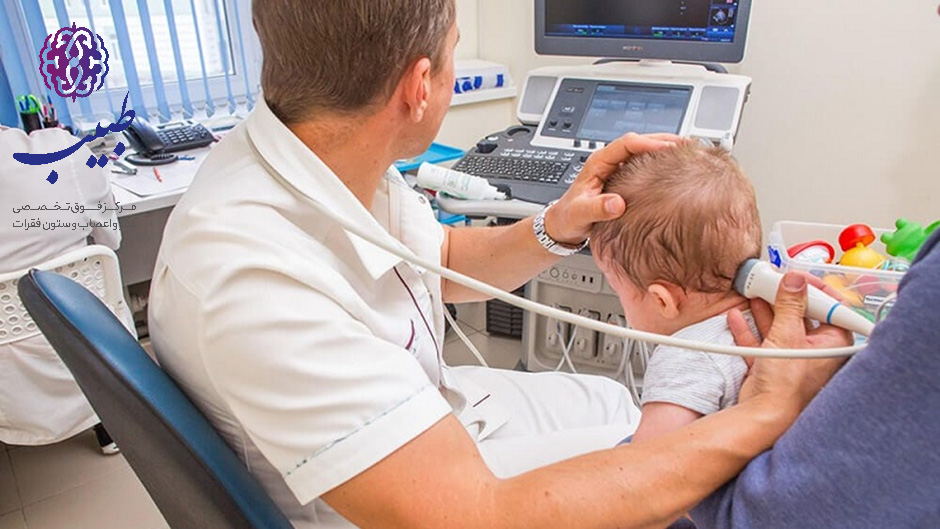
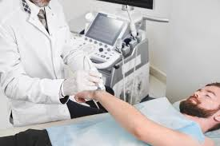
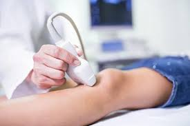
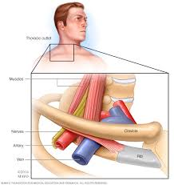
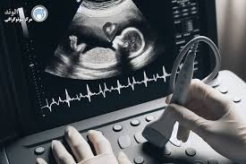
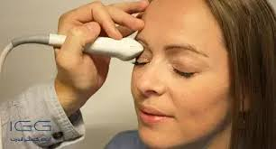
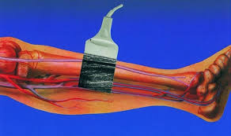
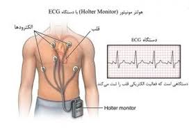

در باره کلینک ما
در کلینیک ما، هر بیمار به دقت و با توجه ویژهای مورد بررسی قرار میگیرد. ما بر این باوریم که تشخیص بهموقع و دقیق میتواند تأثیر زیادی بر روند درمان و بهبودی بیماران داشته باشد.
التراسوند داپلر دماغ اطفال
التراسوند داپلر (Doppler Ultrasound) در اطفال یک روش تصویربرداری غیرتهاجمی و بیخطر است که برای بررسی جریان خون در رگها و عروق بدن کودک استفاده میشود. اهمیت آن به دلایل زیر است
التراسوند داپلر صدر
التراسوند صدر، که به آن سونوگرافی قفسه سینه نیز گفته میشود، یک روش تصویربرداری پزشکی غیرتهاجمی است که با استفاده از امواج صوتی با فرکانس بالا انجام میشود. این روش برای بررسی ساختارهای داخلی قفسه سینه مانند ریهها، پرده جنب (پِلورا)، دیواره قفسه سینه و گاهی اوقات قلب به کار میرود.
التراسوند داپلر اعضای کوچک
التراسوند اعضای کوچک یکی از روشهای تصویربرداری پزشکی است که برای بررسی و ارزیابی ساختارهای کوچک و سطحی بدن انجام میشود. این سونوگرافی با استفاده از امواج صوتی بیخطر و بدون نیاز به اشعه انجام میشود و یک روش غیرتهاجمی، ایمن و دقیق برای تشخیص بیماریها و مشکلات ساختاری در اعضای کوچک بدن به شمار میرود.
التراسوند داپلر وعایی
یکی از رایجترین انواع التراسوند وعایی، داپلر است که میتواند سرعت و جهت جریان خون را نشان دهد. این روش در تشخیص مشکلاتی مانند لختههای خونی (ترومبوز)، انسداد عروقی، تنگی یا گشادشدگی رگها، و بررسی عملکرد دریچههای وریدی بهویژه در پاها کاربرد فراوانی دارد.
التراسوند داپلر اعضای داخل بطنی و حوصلی
التراسوند بطنی برای بررسی اندامهای داخل شکم مانند کبد، کلیهها، کیسه صفرا، لوزالمعده و طحال به کار میرود. پزشکان از این روش برای تشخیص بیماریهایی مانند سنگ کلیه، کیست، تومور یا التهاب اندامهای شکمی استفاده میکنند. در مقابل، التراسوند حوصلی برای بررسی اندامهای لگنی انجام میشود. این نوع سونوگرافی در زنان برای بررسی رحم، تخمدانها و بررسی وضعیت بارداری کاربرد دارد. در مردان نیز برای بررسی پروستات و مثانه استفاده میشود.
التراسوند داپلر چشم
از التراسوند چشم زمانی استفاده میشود که پزشک نتواند با معاینهی مستقیم، داخل چشم را بهخوبی ببیند؛ مثلاً در مواقعی که خونریزی، کدورت قرنیه یا آبمروارید شدید وجود دارد. این روش کمک میکند تا مشکلاتی مانند جداشدگی شبکیه، تومورها، اجسام خارجی، یا آسیبهای وارد شده به کرهی چشم تشخیص داده شوند.
التراسوند داپلر عضلی اسکلیتی
التراسوند عضلی و اسکلتی یکی از روشهای تصویربرداری پیشرفته در پزشکی است که برای بررسی عضلات، تاندونها، رباطها، مفاصل و استخوانها به کار میرود. این روش با استفاده از امواج صوتی انجام میشود و به پزشکان کمک میکند تا مشکلات و آسیبهای مربوط به سیستم حرکتی بدن را بدون نیاز به اشعه یا جراحی تشخیص دهند
معاینات تلویزیونی قلب و ثبت گراف برقی قلب
این روش با استفاده از امواج صوتی (مانند سونوگرافی) انجام میشود و تصاویر زندهای از قلب ایجاد میکند. به همین دلیل به آن "معاینه تلویزیونی" هم گفته میشود، چون پزشک میتواند حرکات و عملکرد قلب را روی صفحه نمایش ببیند.